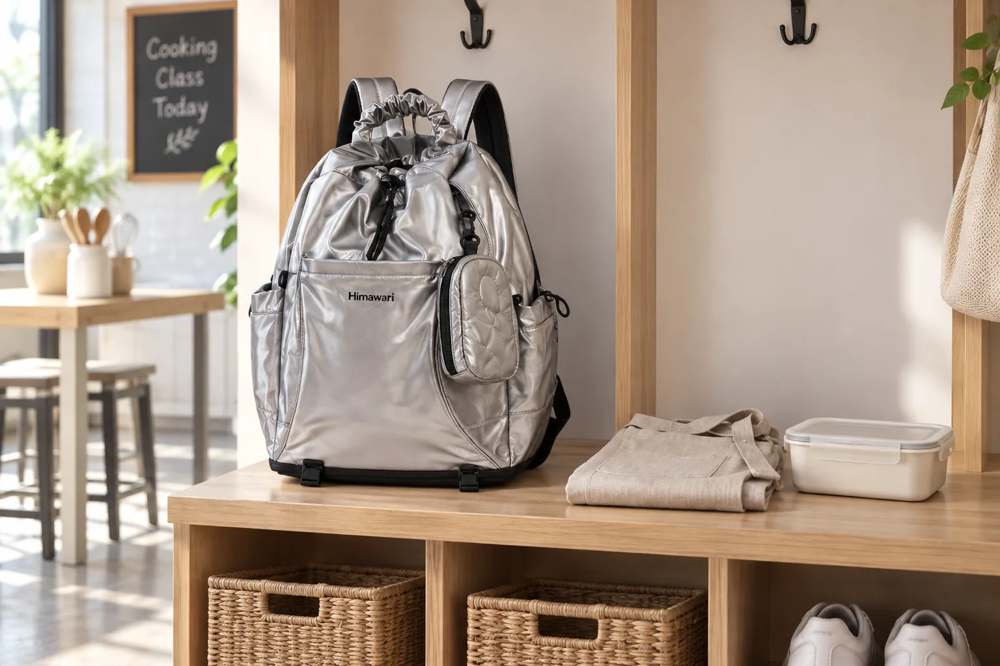

요리 수업 가는 날의 백팩: 앞치마와 돌아올 용기 자리

요리 수업은 출발할 때보다 마칠 때 짐의 모양이 달라질 수 있습니다. 개인 앞치마나 필기 도구만 챙겼다가 수업에서 만든 것을 별도 용기에 가져오는 경우도 있고, 현장에서 아무것도 가져오지 않는 경우도 있습니다. 준비물과 반출 가능 여부는 수업을 운영하는 곳의 안내가 기준입니다. 백팩을 음식 보관 용기로 생각하기보다, 개인 물건을 정리해 조리 공간과 분리하는 출발점으로 사용해 보세요.
예약 안내에서 제공 물품과 개인 준비물을 가릅니다
앞치마, 실내화, 필기 도구, 용기 중 무엇을 직접 가져와야 하는지 수업 안내를 확인하세요. 제공되는 물건까지 모두 챙기면 가방이 불필요하게 커질 수 있습니다. 개인 앞치마가 필요하다면 접어서 한 묶음으로 만들고, 휴대전화·지갑 같은 평소 물건과 위치를 나눕니다. 음식 재료나 날카로운 도구는 임의로 가져가지 말고 운영자의 안내를 따릅니다.
도착해서는 백팩을 둘 곳부터 찾습니다
수업 장소에는 조리대, 통로, 개인 물건을 둘 자리가 각각 다를 수 있습니다. 가방을 조리대에 바로 올려놓기보다 운영자가 안내하는 보관 위치를 확인하세요. 필요한 물건만 꺼내고 지퍼를 닫으면 조리 중 개인 소지품이 흩어지는 일을 줄일 수 있습니다. 특히 사람이 오가는 통로와 물기가 닿는 자리를 피할 수 있는지는 현장 상황을 살펴 판단합니다.
용기는 가져오기 전에 용도를 확인합니다
완성한 음식을 가져올 수 있는지, 어떤 용기가 적절한지는 수업마다 다릅니다. 가능하다고 안내받았다면 용기 뚜껑이 실제로 닫히는지 미리 살펴보고, 빈 용기와 개인 소지품이 섞이지 않게 따로 준비하세요. 사진 속 닫힌 용기는 연출 소품일 뿐, 특정 크기의 용기가 이 백팩에 들어간다는 실측 증거가 아닙니다. 액체가 남거나 온도가 높은 음식의 이동은 수업 운영자의 안내와 용기 취급 정보를 우선하세요.
수업을 마친 뒤에는 젖은 앞치마를 분리합니다
사용한 앞치마나 수건에 물기와 음식물이 묻었다면 출발할 때와 같은 위치로 그대로 되돌리지 않는 편이 좋습니다. 별도 주머니나 포장으로 잠시 분리하고, 집에 도착하면 다른 짐보다 먼저 꺼내 상태에 맞게 관리하세요. 가지고 돌아온 용기가 있다면 닫힘을 확인하고 흔들리거나 기울지 않게 별도로 들 수 있는지도 생각해 보세요. 백팩 자체에 방수·보냉·식품 보관 성능이 있다고 가정하지 않습니다.
AI 사진과 실제 제품 정보는 구분해 봅니다
대표 이미지는 실제 Himawari No.0515 실버 제품 원본을 참조해 가상의 요리 수업 입구 선반에 백팩, 앞치마, 닫힌 용기를 따로 놓은 AI 연출입니다. 실제 수업 운영이나 고객 사용 경험을 촬영한 사진이 아닙니다. 제품의 외부 크기는 가로 35 × 세로 46 × 폭 18cm로 확인되지만, 필요한 준비물이 들어가는지는 실제 물건을 재고 입구와 내부 공간을 함께 비교해야 합니다.
참고·안내
- Himawari No.0515 제품 정보
- 실제 Himawari No.0515 실버 제품을 참조해 수업 전 앞치마와 빈 용기를 따로 놓은 AI 연출입니다. 실제 고객 사진이나 식품 보관 성능을 보여 주는 장면이 아닙니다.
자주 묻는 질문
요리 수업에 용기를 꼭 가져가야 하나요?
수업 운영자의 준비물 안내에 따라 다릅니다. 가져올 물건과 용기 종류를 먼저 확인하고 필요할 때만 챙기세요.
사용한 앞치마를 바로 백팩에 넣어도 되나요?
물기나 음식물이 묻었다면 평소 개인 물건과 분리해 잠시 보관하고, 귀가 후 먼저 꺼내 관리하세요.